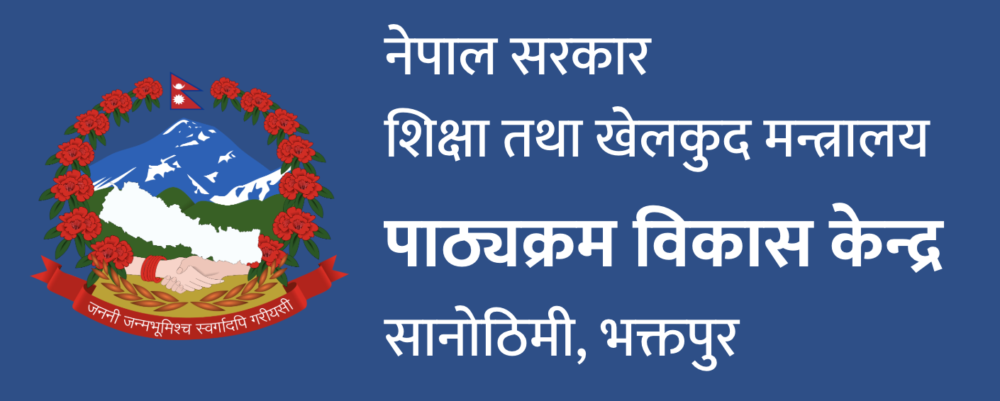

यो डिजिटल सामग्री पाठ्यक्रम विकास केन्द्रले कक्षा १ को 'हाम्रो सेरोफेरो' विषयलाई सबै बालबालिका, विशेषतः अपाङ्गता भएका बालबालिकाका लागि UDL सिद्धान्तअनुसार पहुँचयोग्य बनाउँन परिक्षणको रुपमा तयार गरेको हो ।
